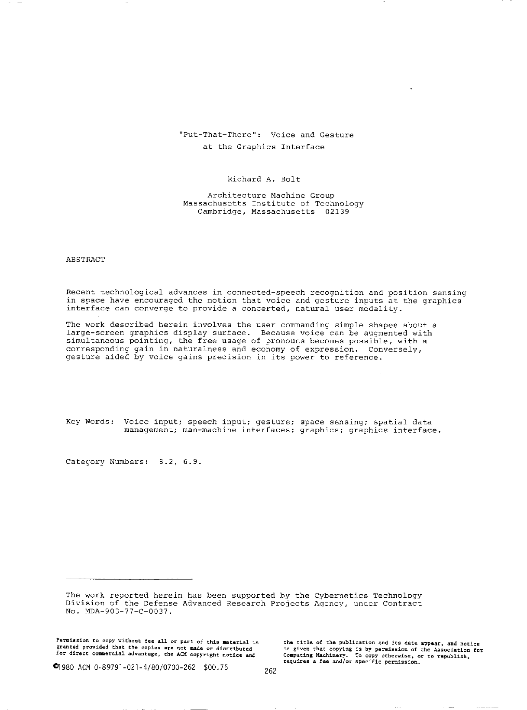

Put-That-There
Voice + gesture at the graphics interface

Overview
“Put-That-There” was a pioneering voice-and-gesture system demonstrated at MIT’s Architecture Machine Group (a predecessor to the Media Lab). A user could create and rearrange simple graphics on a large video display by speaking naturally while pointing — for example, saying “Put that there” and indicating the object and destination with hand gestures. The system compensated for imperfect speech recognition by combining redundant input channels, context, and speech-based feedback.
Deep dive
The work was presented at SIGGRAPH ’80 as “Put-that-there: Voice and gesture at the graphics interface.” MIT’s Media Lab publication page also hosts the paper PDF.
The project explicitly assumed that speech-recognition hardware would never be 100% accurate. To raise “effective accuracy,” it combined voice, gesture, syntax, semantics, context-sensitive interpretation, immediate visual feedback, and spoken clarification questions.
Users referred to objects and locations deictically: “Create a blue square there,” “Put that below that,” etc. The system asked aloud when input was ambiguous, making the conversation loop visible and correctable.
The canonical demo shows a user moving colored shapes around a large-format screen using only voice and pointing, anticipating the multimodal interfaces now common in phones, cars, and AR/VR systems.
Put-That-There is a foundational reference for multimodal HCI. It inspired decades of research on gesture+speech input and is still revisited today; a 2025 arXiv paper proposes “Revisiting put-that-there” for modern head-mounted displays using large language models.
The project’s very name became shorthand for the entire genre of multimodal, deictic interaction. The phrase has outlived the specific hardware by more than four decades.
Team & pioneers
- Richard A. Bolt Researcher at MIT's Architecture Machine Group; principal author and visionary behind the voice-and-gesture interface.
- Chris Schmandt Longtime MIT speech and audio-interface researcher; co-author of the SIGGRAPH '80 paper.
- Eric A. Hulteen Co-author of the "Put-that-there" paper, contributing to the system's implementation and evaluation.
- MIT Architecture Machine Group The precursor to the MIT Media Lab, where multimodal interaction was explored as a way to compensate for imperfect speech recognition.
Media
